Approach 3
Overview
This report contains a summary of 'Approach 3', which uses existing SustHerb LiDAR data from Snøan (2019) and a 'volume under CHM' method to estimate volume (and ultimately, albedo) for relevant study plots. The report covers each step of the analysis and discusses potential limitations/assumptions associated with each step.

Data
Data Selection
SustHerb Data
I chose to use data from SustHerb sites in Trøndelag, Telemark, and Hedmark (n = 37). LiDAR data for these sites was previously processed by Snøan (2019) - thus, I was able to use this LiDAR data as a starting point for my analysis. It is important to note that the following SustHerb sites are missing from my analysis (as they were missing from the analysis conducted by Snøan (2019) and therefore, don't have existing LiDAR data):
- Hedmark: "DD1", "DD2", "JCD1", "JCD2", "M1.1", "M1.2", "M2.1", "M2.2", "M3.1", "M3.2", "OIA1", "OIA2", "OL1", "OL2", "SK1", "SK2"
- Telemark: "Notodden 1 B", "Notodden 1 UB", "Notodden 4 B", "Notodden 4 UB"
Additional variables for each plot that were included in the final model/analysis include "Years Since Exclosure" and "Number of Years Between Clearcut and LiDAR Measurement".
seNorge Climate Data
The albedo model developed by Hu et al. (2018) accepts two climate parameters: (1) monthly average snow-water equivalent (mm) and (2) monthly average temperature (K). seNorge provides this data across the entire country of Norway in the form of spatially-gridded daily estimates with a 1km2 resolution. Thus, it was possible to use obtain relevant time series data for each study site used in this approach.
For each study site, I pulled snow-water equivalent and temperature data from the corresponding year of LiDAR measurement - so, for example, if a plot was measured with LiDAR in 2016, then I pulled climate data corresponding to that plot from 2016. Monthly averages of temperature (C) and snow-water equivalent (mm) were calculated from each time series. Temperature was converted to K for use with the albedo model. The total number of temperature observations is therefore 444 (12 months x 37 sites). The total number of snow-water equivalent observations is also 444 (12 months x 37 sites).
Productivity Index
Site productivity is likely an important variable to control for when attempting to determine the effect of moose exclusion on forest surface albedo. Therefore, I decided to include data from the site productivity index that was developed by Kolstad et al. (2017). This index is based upon a standardized value for mean annual increment in aboveground biomass.
Herbivore Densities
Densities of various herbivores may have important effects on vegetation states within forest ecosystems, and therefore, it is likely relevant to control for relevant herbivore densities in our final analysis. In addition to moose, both red deer and roe deer are important herbivores in Norwegian boreal forests. Thus, I decided to include densities of moose, red deer, and roe deer in the final model for this approach.
Speed et al. (2019) and Austrheim et al. (2011) calculated metabolic biomass (kg/km2) of many different large herbivores in each Norwegian municipality (for 1949, 1959, 1969, 1979, 1989, 1999, 2009, and 2015), which allows us to include herbivore densities as covariates in our final model.
For simplicity's sake, I decided to use herbivore data from 2015 for all SustHerb sites in this approach. However, some sites have LiDAR data closer to 2009 than to 2015 (ex. "namdalseid_1kub" has LiDAR data from 2010). It might be worth it to re-do the analysis and grab herbivore densities from the year closest to that of the LiDAR data for each site. I could then include "herbivore data year" as a categorical variable in the final model, if necessary.
What is your opinion of using 2015 data for all sites? Should I re-do the analysis as described above?
Forest Canopy Height MAD
Surface roughness (and therefore forest canopy roughness) may be an important factor in surface albedo. Snøan (2019) used airborne laser measurements (LiDAR) to examine the effects of moose exclusion on boreal forest canopy, and found that moose exclusion significantly altered forest canopy height mean absolute deviation (MAD), which is a metric for canopy roughness. Therefore, I decided to include the LiDAR-derived canopy MAD measurements produced by Snøan (2019) in the final analysis for this approach.
Data Summary
SustHerb Dataset
Summary
Tree Species Proportions
seNorge Data
Snow-Water Equivalent
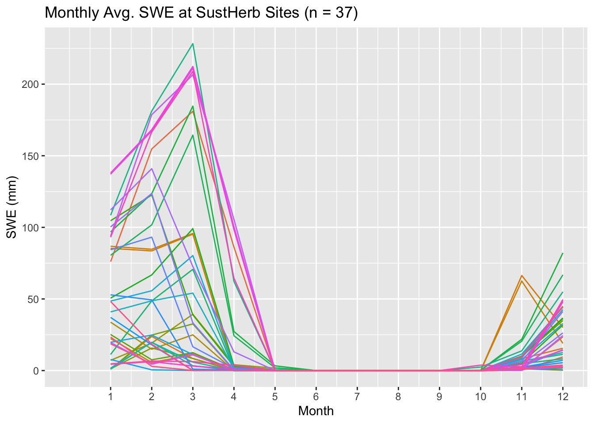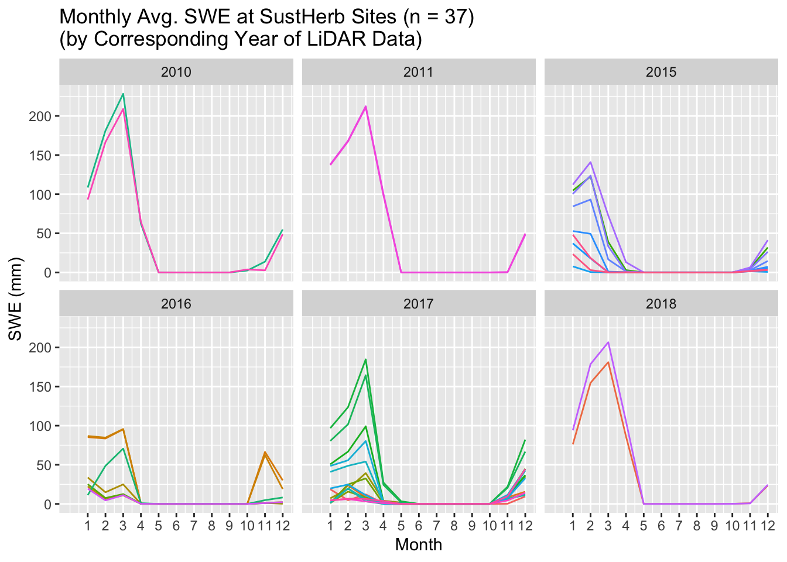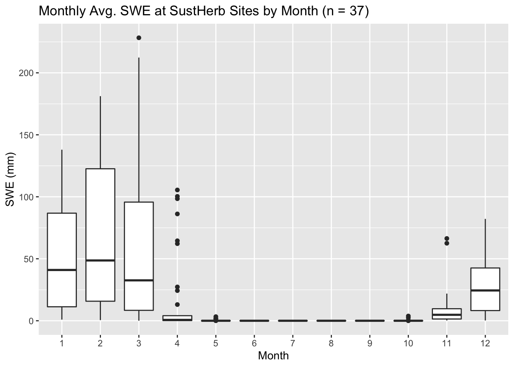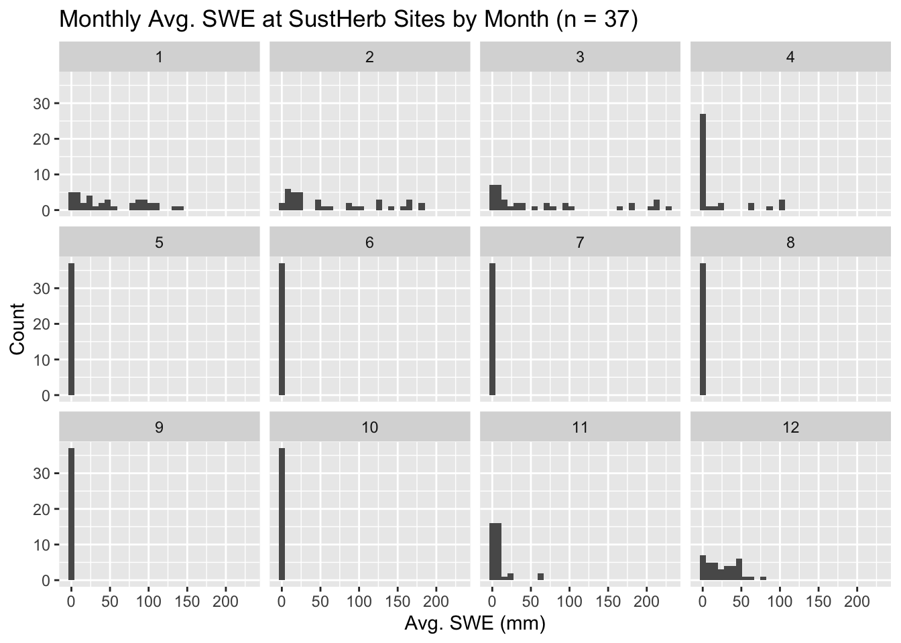
Temperature
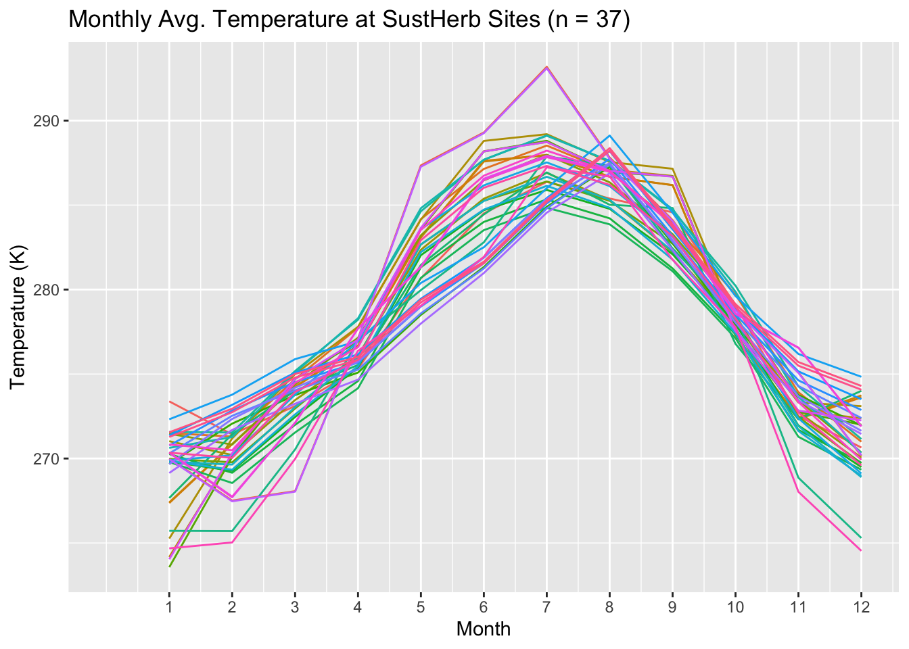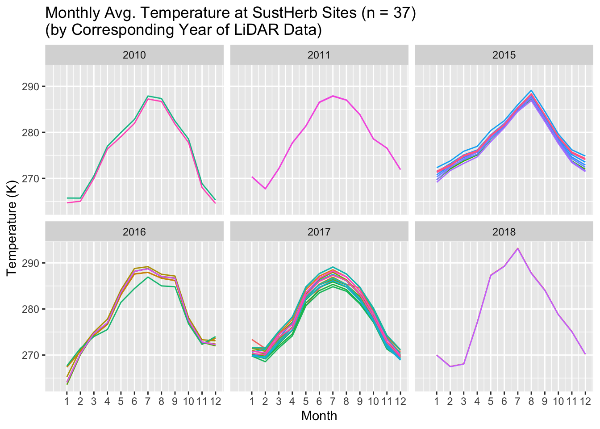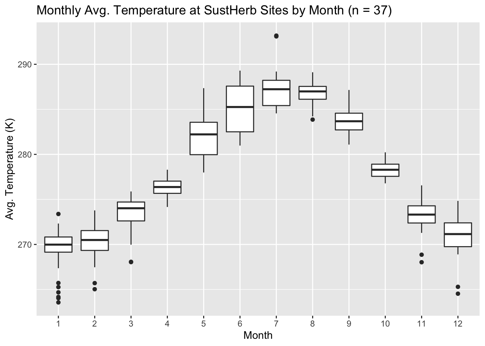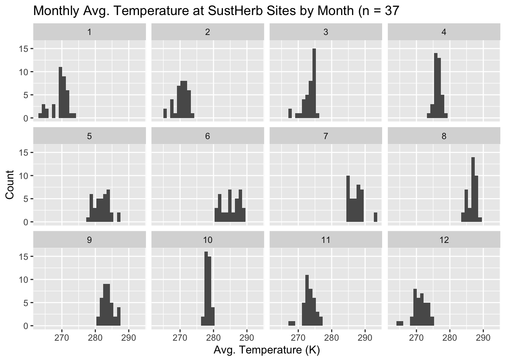
Productivity Index
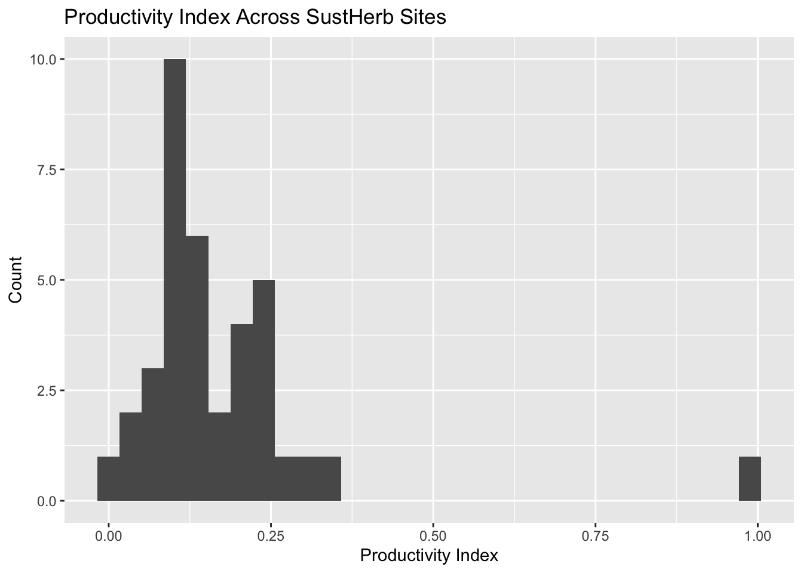
Herbivore Densities
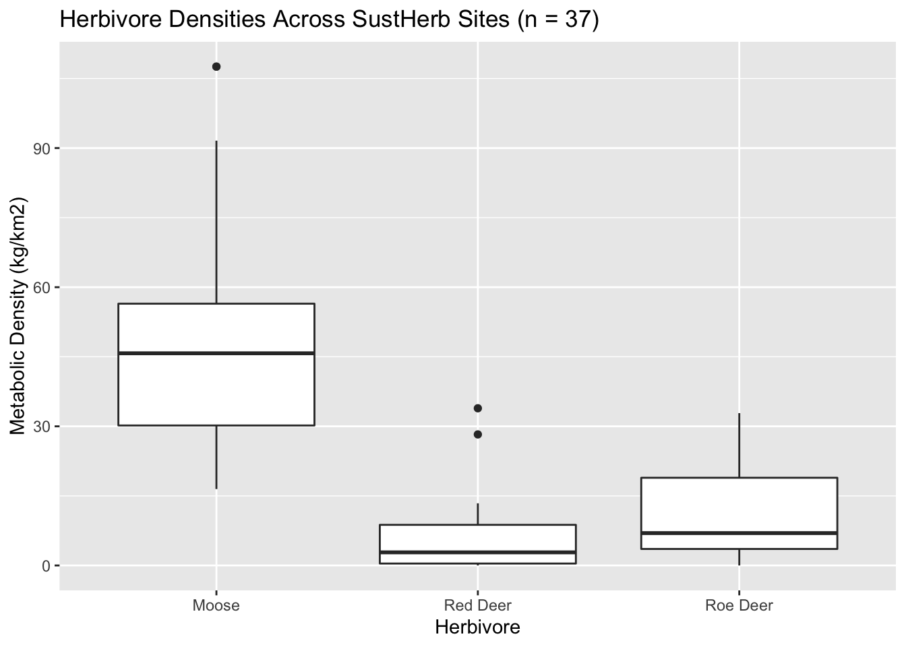
Volume Calculations
Reasoning
Using LiDAR to calculate "volume under CHM":
The goal with this step was to calculate the total volume under a canopy height model (CHM) for each SustHerb plot, which could then be used as the 'volume' parameter in the volume-based albedo model developed by Hu et al. (2018). Established methods could be used to construct a CHM for the corresponding LiDAR footprint of each SustHerb plot (specifically, by using the lidR package and associated methods).
The CHM produced by this method can be exported as a pixelated raster grid, where each pixel has a spatial resolution of 1m2 and an associated z value (i.e. height). I thought that, for a given CHM, I could calculate the volume of each pixel (1m x 1m x z-value) and then sum all pixel volumes to produce a plot-level estimate of volume. This volume could then be plugged into the albedo model.
In contrast to Approach 2, this method doesn't have a specific height threshold as to what LiDAR points are delineated as trees. I thought that this method would be more effective than Approach 2 at capturing the small trees that have been heavily browsed in some open plots. However, because this approach doesn't use any kind of height threshold, it's possible that other types of vegetation (ex. field-layer vegetation) will be included in each plot-level estimate.
Methods
- Read in LAS files from Snøan (2019) (n = 37)
- For each LAS file:
- Projected to UTM32 CRS
- Generated a digital terrain model (DTM) for the file
- Used a k-nearest neighbors algorithm and a pixel resolution of 0.5m2
- Used the DTM to "normalize" the LiDAR data (i.e. remove surface topography)
- Generated a canopy height model (CHM) from the "normalized" LAS file
- Used the lidR package wiki to reduce pits in the CHM (i.e. used the pitfree alogrithm)
- Used the watershed algorithm and LAS_trees function to segment and delineate individual trees (with a minimum tree height threshold of 2m)
- Filtered out LiDAR points associated with trees >7m in height, as in Snøan (2019)
- Clipped filtered LAS file to 20x20m square (based on plot coordinates)
- Created new raster CHM with pixels of 1m2 resolution
- Calculated volume of each pixel (1m x 1m x z-value)
- Summed the volumes of all pixels in the plot to produce a plot-level volume estimate
Results
Volume
Boxplot

Density Plot

By Study Site

CHM Examples
I've provided a few images here which show (1) the original CHM for a given plot + the polygon used to clip it to 20m2, and (2) the second version of the CHM (generated after removal of trees >7m and clipping).
Drangedal 4 (Exclosure):


Furesdal (Exclosure):


Albedo Estimates
Reasoning
I used the forest volume-based version of the albedo model developed by Hu et al. (2018) together with snow-water equivalent and temperature data from seNorge (described earlier) to produce plot-level albedo estimates for the years corresponding with those in which LiDAR measurements were recorded for each plot. The albedo model produces monthly estimates for spruce, pine, and birch forest (which encompasses all other deciduous species).
I decided that it might be useful to create a composite albedo value for each plot (for each month), which would allow for simple comparison of albedos at the plot level. For a given plot in a given month, the first step in creating a composite albedo value is to multiply each species-specific albedo value (produced by the model) with the corresponding species proportions for the plot. This produces three 'fractional albedo' values, which are then summed to produce a 'composite albedo' value:
\[C_{ij} = (A_{ij}S_{jk}) + (A_{ij}S_{jk}) + (A_{ij}S_{jk})\\\;\\C=composite\;albedo\\A = species\mbox{-}specific\;albedo\\S = species\;proportion\\i = month\;(1\mbox{-}12);\;j = plot;\;k = species\;(spruce,\;pine,\;birch)\]
What do you think about this 'composite albedo'? Is it a reasonable way of assessing albedo across plots?
Method
- For a given plot, I ran a function to produce 12 albedo estimates (one for each month of the year)
- This function incorporated the summed volume (m3) estimate for the plot, as well as 12 values for both average snow-water equivalent (mm) and temperature (K). Snow-water equivalent and temperature data were produced from the year corresponding to that in which the LiDAR measurements of the plot were obtained. The function used the albedo model form described earlier with species-specific coefficients to produce species-specific albedo estimates for each month of a single year.
- The function then used the relative proportion of spruce, pine, and birch trees to calculate composite albedos (as described in the reasoning section).
- For each plot, the function produced a total of 12 composite albedo estimates (one for each month of the year). Thus, the final albedo dataset contains 888 albedo estimates (12 per plot, 444 per treatment).
Results
Albedo
Time Series
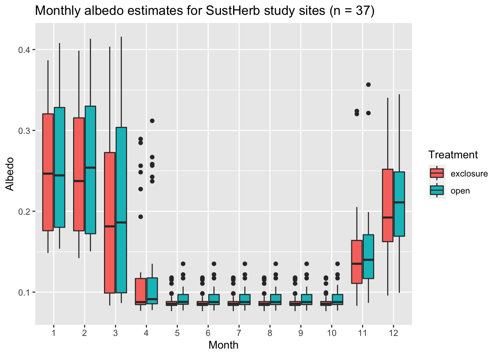
By Site
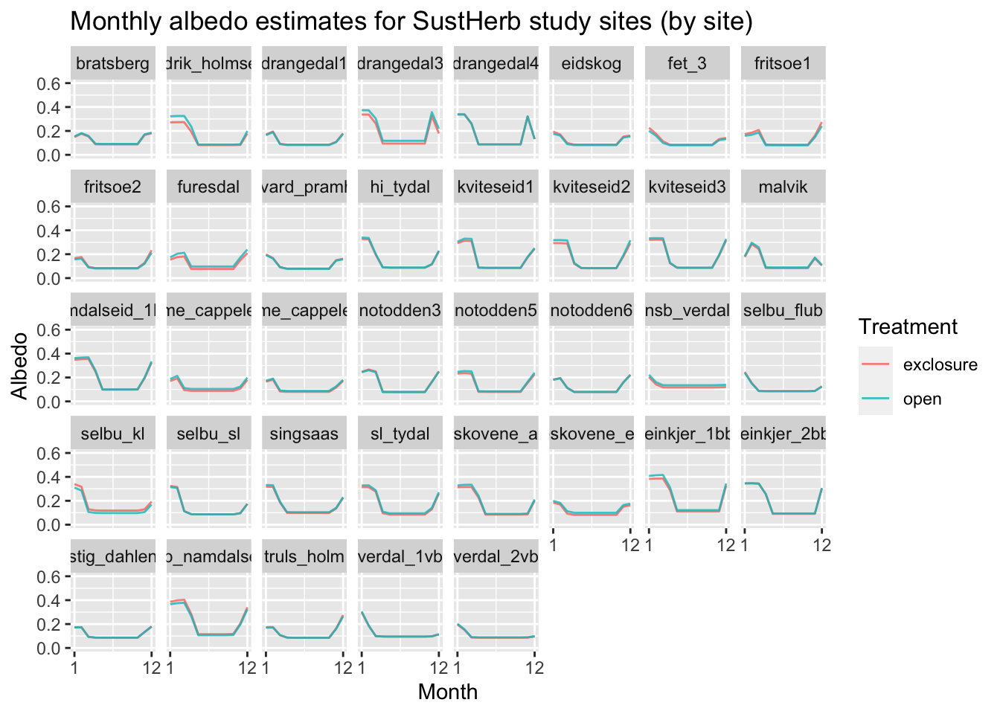
Model
Correlation Matrix
I created a correlation matrix to investigate possible correlations between continuous explanatory variables (which would ultimately affect the stability of the final model). It appears that Roe Deer Density is moderately correlated with moose density, but I'm not sure if this correlation is strong enough to warrant removal from the final model.
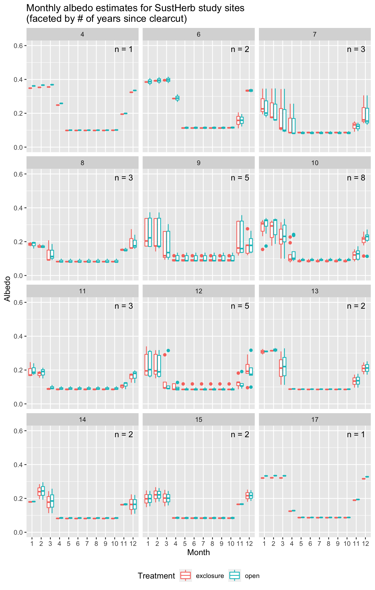
Model
Due to the setup of the study design and non-independence of data within each study site (i.e. 2 plots per study site, not independent of each other), I believe we'll need to use a linear mixed effects model to model estimated albedo as a function of treatment (moose exclusion). I gave a "first attempt" at a model below - this model was implemented via the lme4 package in R w/ lmer function). I specified the "LocalityName" variable as a random intercept, in order to account for non-independence of data at the level of the study site. The main fixed effect of interest (treatment) was then specified as an interaction with month.
To select a 'best' model, I started off with a base model with all of the variables of interest (as well as 2-way interaction terms), and then created a 'filtered' model by eliminating terms that weren't significant. I also created a 'simple' model, which only included variables that I thought would be most relevant. I then used the AIC function to calculate AIC values for each model. Finally, I chose the model with the lowest AIC value as the 'best' (below).
#Initial model:
lmer(Composite_Albedo ~
Treatment*Month +
Clearcut_Lidar +
Moose_Density +
Canopy_Height_MAD +
(1 | LocalityName),
data = model_data)| Composite_Albedo | |||
|---|---|---|---|
| Predictors | Estimates | CI | p |
| (Intercept) | 0.26928 | 0.21526 – 0.32331 | <0.001 |
| Treatment [exclosure] | -0.00340 | -0.02454 – 0.01774 | 0.752 |
| Month [2] | -0.00297 | -0.02342 – 0.01747 | 0.776 |
| Month [3] | -0.05699 | -0.07744 – -0.03654 | <0.001 |
| Month [4] | -0.13612 | -0.15657 – -0.11568 | <0.001 |
| Month [5] | -0.16540 | -0.18585 – -0.14495 | <0.001 |
| Month [6] | -0.16546 | -0.18591 – -0.14501 | <0.001 |
| Month [7] | -0.16546 | -0.18591 – -0.14501 | <0.001 |
| Month [8] | -0.16546 | -0.18591 – -0.14501 | <0.001 |
| Month [9] | -0.16546 | -0.18591 – -0.14501 | <0.001 |
| Month [10] | -0.16536 | -0.18581 – -0.14491 | <0.001 |
| Month [11] | -0.10797 | -0.12841 – -0.08752 | <0.001 |
| Month [12] | -0.04597 | -0.06642 – -0.02552 | <0.001 |
| Clearcut_Lidar | -0.00246 | -0.00633 – 0.00142 | 0.214 |
| Moose_Density | 0.00029 | -0.00017 – 0.00075 | 0.211 |
| Canopy_Height_MAD | -0.00416 | -0.01596 – 0.00764 | 0.490 |
|
Treatment [exclosure] * Month [2] |
-0.00080 | -0.02972 – 0.02811 | 0.957 |
|
Treatment [exclosure] * Month [3] |
-0.00182 | -0.03073 – 0.02710 | 0.902 |
|
Treatment [exclosure] * Month [4] |
0.00031 | -0.02860 – 0.02923 | 0.983 |
|
Treatment [exclosure] * Month [5] |
0.00200 | -0.02692 – 0.03091 | 0.892 |
|
Treatment [exclosure] * Month [6] |
0.00200 | -0.02692 – 0.03092 | 0.892 |
|
Treatment [exclosure] * Month [7] |
0.00200 | -0.02692 – 0.03092 | 0.892 |
|
Treatment [exclosure] * Month [8] |
0.00200 | -0.02692 – 0.03092 | 0.892 |
|
Treatment [exclosure] * Month [9] |
0.00200 | -0.02692 – 0.03092 | 0.892 |
|
Treatment [exclosure] * Month [10] |
0.00200 | -0.02691 – 0.03092 | 0.892 |
|
Treatment [exclosure] * Month [11] |
0.00200 | -0.02692 – 0.03092 | 0.892 |
|
Treatment [exclosure] * Month [12] |
0.00155 | -0.02737 – 0.03046 | 0.917 |
| Random Effects | |||
| σ2 | 0.00 | ||
| τ00 LocalityName | 0.00 | ||
| ICC | 0.30 | ||
| N LocalityName | 37 | ||
| Observations | 888 | ||
| Marginal R2 / Conditional R2 | 0.594 / 0.716 | ||
Is this model correctly specified? Should I be using a non-linear mixed effects model (nlme) instead?
Diagnosis
It certainly looks like something strange is happening with the residuals. Not sure why there is this linear trend at lower fitted values:
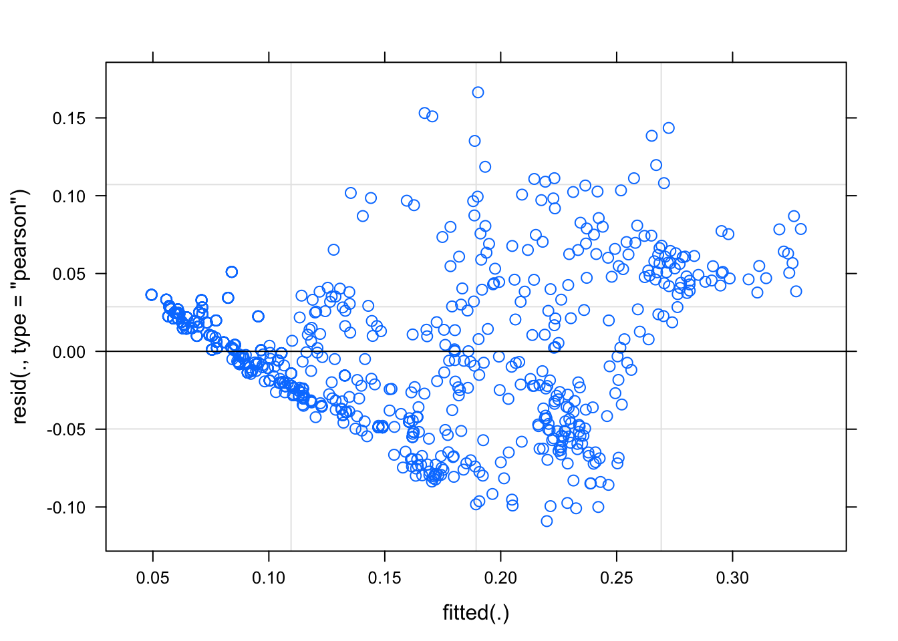
Next Steps?
Better Model Selection
After looking at the residuals plot for the model in the previous section, I'm not convinced that I'm using the correct model. It's clear that the amount of variation in albedo estimates varies substantially by month (ex. the variation in albedo is much greater in December than in July). Do I need to set a specific 'covariance structure' to account for this?
Also, I'm a bit confused about specifying "Month" as a fixed effect vs random effect. We're interested in seeing how treatment (moose exclusion) affects albedo for each month - therefore, it's necessary to add "Month" as a fixed effect together with treatment. However, would it be relevant to add "Month" as a random effect as well/instead? For a given plot, the data from Month 1 will likely be more similar to data from Month 2 than data from Month 8 (i.e. there is non-independence in data across months). How do we handle this?